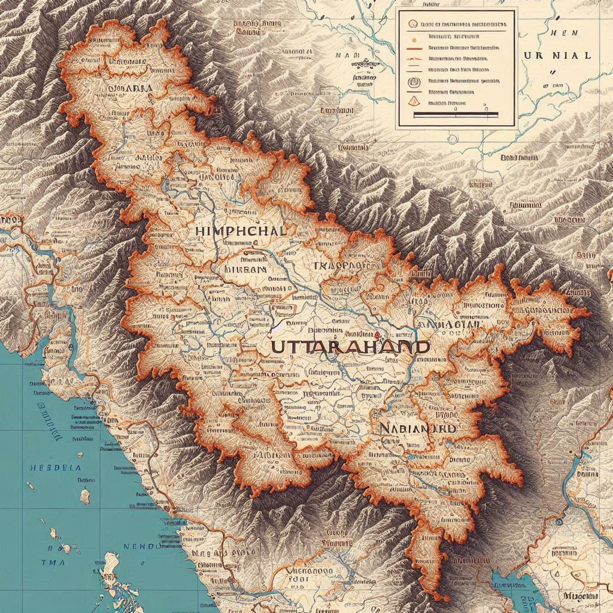
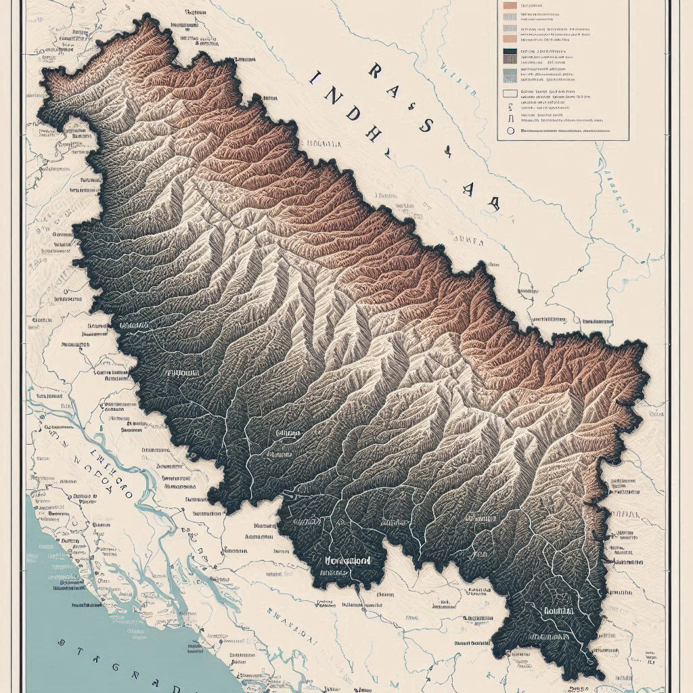

Uttarakhand is located in the northern part of India and is known for its stunning landscapes, including the Himalayas, valleys, and rivers. Here are key details about its geographical location:
1. Boundaries
- North: Uttarakhand shares its northern border with the Tibet Autonomous Region of China.
- South: It is bordered by Uttar Pradesh.
- East: The eastern boundary is shared with Nepal.
- West: To the west, it borders Himachal Pradesh.
2. Regions
- Garhwal Region: This region includes districts like Dehradun, Pauri Garhwal, and Tehri Garhwal. It is known for its mountainous terrain and pilgrimage sites.
- Kumaon Region: Comprising districts like Nainital, Almora, and Pithoragarh, Kumaon is known for its lush valleys, lakes, and cultural heritage.
3. Major Cities
- Dehradun: The capital city, situated in the Doon Valley, serves as a gateway to the Himalayas and is known for its educational institutions.
- Nainital: A popular hill station famous for its picturesque lake and pleasant climate.
- Haridwar: A significant pilgrimage city located on the banks of the Ganges River, known for the Kumbh Mela.


4. Topography
- Mountains: The state is home to several significant peaks, including Nanda Devi, which is the second-highest peak in India and a UNESCO World Heritage Site.
- Valleys: It features various valleys, such as the Kumaon and Garhwal valleys, known for their beauty and biodiversity.
- Rivers: Major rivers include the Ganges, Yamuna, and their tributaries, which originate in the Himalayas and flow through the state.
5. Climate
- Varied Climate: The climate varies from tropical in the low-lying areas to alpine in the higher altitudes. The region experiences heavy snowfall in winter, especially in the mountains, and pleasant weather during the summer.
Conclusion
Uttarakhand's geographical location makes it a unique blend of natural beauty, cultural diversity, and spiritual significance. Its mountainous terrain and rich biodiversity attract tourists, pilgrims, and adventure enthusiasts from around the world, contributing to its reputation as the "Land of the Gods."